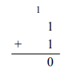
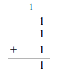
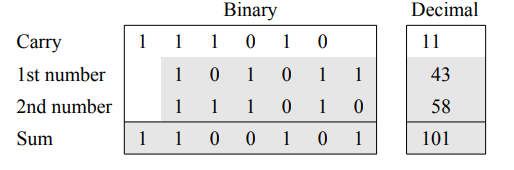

Binary arithmetic
Let’s take a look at how arithmetic operations, such as addition and multiplication, can be performed on binary numbers. First, let’s examine binary addition of single digit numbers. The simplest case is the addition of 0 plus 0. In binary, it is represented as follows:
\[0+0=0\]
Some prefer to view this vertically as opposed to horizontally as follows:
Extending this, zero plus one and one plus zero both equal one:
\[0 + 1 = 1\]
\[1 + 0 = 1\]
Or vertically:
Finally, one plus one equals two. But the problem is that two cannot be represented as a single binary digit. Instead, we record a zero in the one’s position and carry a one over to the two’s position. This is represented as follows:
\[1 + 1 = 0\] (carry 1)
Or vertically:

Multi-digit binary addition uses the same strategy employed in decimal addition. One works right-to-left from the least significant digit to the most significant digit, making sure that the carry from the previous column is added to the current column. Because the carry digit for a particular column may be “1” at the same time the corresponding digits of both of the numbers being added are also “1,” it is possible to encounter “one plus one plus one equals three” while performing addition. Since 112 equals three, “1” should be placed in the current position and another “1” carried over to the position immediately to the left of the current position. This is be represented as follows:
\[1 + 1 + 1 = 1\] (carry 1)
Or vertically:

Let’s take a look at the addition of 38 + 15 = 53. The following table shows both the binary addition (on the left) and decimal addition (on the right):
And now the addition of 43 + 58 = 101:

Try the addition of 50 + 77 = 127.
Binary multiplication is also fairly simple. Zero times zero equals zero, as does zero times one and one times zero. One times one equals one. These expressions can be represented in base two as follows:
\[0 \times 0 = 0\] \[0 \times 1 = 0\] \[1 \times 0 = 0\] \[1 \times 1 = 1\]
Notice that none of these four expressions generate a carry, and only one generates a result other than zero. As we will see later, these features lead to binary multiplication being easy to perform; in fact, even easier to perform than decimal multiplication!
Multiplication of multi-digit binary numbers works in a manner similar to multiplication of decimal numbers. As we all learned in grade school, multiplication problems are solved by adding together several partial products. A partial product is formed by multiplying a single digit of the bottom number times the entire top number. For example, given the base ten multiplication problem \(472 \times 104\), we would solve it in the following way:

The first partial product is given by multiplying 4 times 472, which is 1888. The second partial product is computed as 0 times 472, which is 0. Normally we do not write down zero partial products. The final partial product is 1 times 472. Notice that we write this partial product so that its rightmost digit is directly under the digit of the second number that we multiplied by (i.e., 1). We then add the partial products, column by column from right-to-left, in order to obtain the final answer (49,088 in this case).
We apply this same strategy to perform binary multiplication. Let’s take a look at the product of \(19 \times 5 = 95\) (in base two: \(10011_2 \times 101_2 = 1011111_2\)):
We form partial products by multiplying the top number by each of the digits of the bottom number. Since the right-most digit of the second number is 1, the first partial product is given by 1 times 100112, or 100112. The right-most digit of this partial product is aligned with the rightmost digit of the second number. We do not record the partial product for zero times something, so multiplying the first number by the second digit of the second number, 0, doesn’t generate anything. The final partial product is computed as 1 times 10011 again, but this time where the right-most digit of this result is aligned beneath the third digit of the second number. The partial products are then added to obtain the final result, 10111112.
As we have just seen, in binary multiplication the formation of the partial products is very easy since we are only multiplying by 1 (in which case we copy the top number into the proper position) or 0 (in which case we do nothing). The only difficult steps in this process are making sure that we align the partial products correctly and compute the sum of those products accurately. Now let’s try a more difficult problem: the product of 143 23 = 3289 (in base two: \(10001111_2 \times 10111_2 = 110011011001_2\))

Here, we copy the top number as a partial product everywhere there is a 1 digit in the second number, each time making sure that we align the partial product so that the least significant digit is directly underneath the 1 we are multiplying by. We get the final result by adding the partial products together.
When adding together the partial products, it is important that we handle the carry values properly. Because there is no limit on the size of the numbers to be multiplied, it is possible that there will be a large number of partial products. This situation can lead to carry values that extend over multiple columns. To illustrate this, consider summing a partial product column of five 1s:
Considering these separately, we initially add the first two 1s: 1 + 1 = 10. We then add the next one to that sum: 10 + 1 = 11. We then add the next one: 11 + 1 = 100. Finally, we add the last one: 100 + 1 = 101. So, 1 + 1 + 1 + 1 + 1 = 1012. To record this, we write a 1 in the current column and carry 10, placing the 0 in the column immediately to the left of the current column and 1 immediately to the left of that column. This is no different from the situation we encounter when adding up a long series of decimal numbers. If the current column of digits added to one hundred and one, we would place a 1 in the current column, carry a 0 to the previous column, and carry a 1 to the column before that.
Let’s take a closer look at the summation of the partial products of the previous example (\(143 \times 23 = 3289\)). The right-most column of partial products offers no problem. It is simply 1 plus nothing, giving a result of 1 with no carry. The second column requires us to add 1 + 1 resulting in a 0 with 1 carried over to the third column. Column three is interesting and is illustrated below:

The sum of the digits in column three, including the carry, is 1 + 1 + 1 + 1 = 1002 = 4. Hence, a 0 is written in column three, a 0 is carried to column four, and a 1 is carried to column five.
Column four contains three 1s, giving us a sum of 112. Hence, we write a 1 in column four and carry a 1 to column five. Note that the 1 we just carried to column five joins the carry of 1 already in that column:
Column five now contains a total of five 1s (including the two carries). Since five is written in binary as 1012, we write a 1 in column five, and carry a 0 into column six and a 1 into column seven. The current state of the summation of partial products after adding the contents of column five is illustrated below:

The remainder of the computation is carried out in a similar manner, always being careful to handle the carries properly. Try it out.